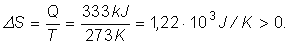

Numim entropie mărimea fizică de stare a cărei variaţie
între două stări de echilibru poate fi calculată astfel:
Numim entropie mărimea fizică de stare a cărei variaţie
între două stări de echilibru poate fi calculată astfel:
| (1) |
Elemente de termodinamică. |
Al doilea principiu al termodinamicii |
H-4. |
Entropia |
Principiile termodinamicii fundamentează mărimi de stare utile: principiul I introduce temperatura, iar principiul I, energia internă.
Germanul Rudolf Clausius a oferit în 1865 o altă formulare a principiului II al termodinamicii, introducând încă o mărime de stare utilă: entropia.
Numim entropie mărimea fizică de stare a cărei variaţie
între două stări de echilibru poate fi calculată astfel:
| (1) |
unde ΔQi sunt cantităţile de căldură schimbate la temperaturile intermediare Ti din timpul procesului.
 Provocarea 4-1
Provocarea 4-1
Cât este variaţia de entropie pentru o cantitate de gheaţă cu masa 1 kg care se topeşte la presiune atmosferică normală?
Procesul de topire a gheţii la presiune atmosferică normală are loc la 273 K şi gheaţa primeşte 333 kJ sub formă de căldură. Conform relaţiei (1), variaţia de entropie este:

Aşadar, în procesul de topire a gheţii, entropia apei creşte.
Provocarea 4-2
Cât te aştepţi să fie variaţia de entropie la amestecarea apei calde cu apă rece?
Dacă doar cele două cantităţi de apă caldă şi rece schimbă energie sub formă de căldură, entropia apei reci creşte (căldură primită), iar a apei calde scade (căldură cedată).
Creşterea entropiei apei iniţial rece este mai mare decât scăderea entropiei apei iniţial rece: apa rece primeşte căldură la temperaturi intermediare mai mici decât cele la care apa caldă cedează căldură. Ori de câte ori are loc un transfer de energie sub formă de căldură, entropia ansamblului creşte.
Dacă este utilizată o maşină frigorifică pentru a răci un corp pe seama încălzirii altuia, se micşorează entropia ansamblului celor două corpuri. Lucrul mecanic utilizat de maşina frigorifică ar putea fi obţinut de la un motor termic pe seama trecerii căldurii de la o sursă caldă la una rece, acest proces realizându−se cu creşterea entropiei. Bilanţul total indică o creştere a entropiei sistemuli care cuprinde cele două corpuri, maşina frigorifică, motorul termic şi sursele sale caldă şi rece.
Generalizând astfel de observaţii, Clausius a formulat principiul al II−lea al termodinamicii astfel:
Un proces între două stări de echilibru termodinamic se desfăşoară
în sensul creşterii entropiei sistemului împreună cu mediul acestuia.
Cu alte cuvinte, există un sens unic în care procesele se desfăşoară: cel al creşterii entropiei (ΔS>0).
Toate procesele naturale sunt ireversibile.
Doar în cazul idealizat al proceselor reversibile, variaţia de entropie a sistemului împreună cu mediul său este nulă (ΔS=0).
Dacă încercăm să inversăm desfăşurarea unui proces real, chiar dacă entropia sistemului se micşorează, entropia mediului creşte, bilanţul total de entropie fiind pozitiv.
Toate procesele care se desfăşoară în Univers se datorează faptului că energia nu este încă uniform repartizată: stelele sunt încă mai fierbinţi decât alte părţi ale Universului, cum sunt planetele. Oricare dintre procesele în desfăşurare conduce la creşterea entropiei şi la apropierea de o stare cu energia uniform repartizată: moartea termică a Universului!